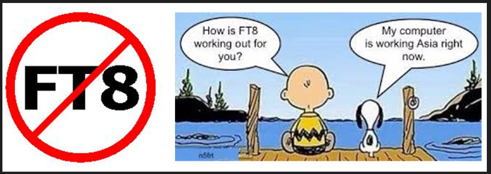

73,
Bob - W6OPO
From: Chat <chat-bounces@ncdxc.org> on behalf of Jim Sansoterra via Chat <chat@ncdxc.org>
Sent: Friday, December 15, 2023 9:21 AM
To: KE1B <ke1b@richseifert.com>
Cc: NCDXC Discussion List <chat@ncdxc.org>
Subject: Re: [NCDXC Chat] t32tt ft4 day today
Sent: Friday, December 15, 2023 9:21 AM
To: KE1B <ke1b@richseifert.com>
Cc: NCDXC Discussion List <chat@ncdxc.org>
Subject: Re: [NCDXC Chat] t32tt ft4 day today
well said...
On Fri, Dec 15, 2023 at 11:16 AM KE1B via Chat <chat@ncdxc.org> wrote:
_______________________________________________
On Dec 13, 2023, at 1:11 PM, Rick NK7I via Chat <chat@ncdxc.org> wrote:
We have reached a new low on the boredom scale, 5 bands (because that's all that are on) in 4 minutes for a mode I didn't need.
Not just a new low on the boredom scale, but perhaps a new low on the state of amateur radio.
Dom’s T32TT operation is an FT8/FT4 “mill”; he has a bank of 4 or 5 stations, on all bands (and sometimes more than one on the same band), running in FULL AUTOMATIC mode, with little to no human oversight. That’s why you will sometimes see him call the same station 5-10 times or more, as the software gets stuck if part of the exchange handshake gets lost. In addition, if the “RR73” gets lost, that gets repeated, too, and the system logs a QSO for every sent “RR73”. So you can work him once, miss a couple of RR73s, and show up 3-4 or more times in the log, within minutes.
Dom and his team, meanwhile, are down at the beach, or at the bar, having a few beers or relaxing in the sun. The radios are running by themselves. Granted, his “QSO Mill” is generating thousands of contacts, but it’s really just a counter incrementing in a database. How exciting (NOT)!
And as Rick notes, it’s boring even for the people working him. Just run the software, go take a bathroom break, and come back to a log full of QSOs.
Clublog now reports that FT8/FT4 has become, by far, the predominant mode for all QSOs in recent times (perhaps with the exception of CW or SSB contests). What a commentary on the state of our hobby. No human interaction, not even a voice on the other end saying “Five-Nine”. When working a DXpedition on SSB, I always end it with either “Good Luck”, or “Have fun”, or *something* human.
Yes, there is skill involved in building one’s station and antennas, without which you can’t even work FT modes, but there is virtually NO skill in making QSOs, particularly with DXpeditions. Just find a semi-clear spot, and let the software go through its motions until you see red. Sad.
As an aside, does running a station in “Full Automatic Mode” turn it into an “Assault Weapon”? It’s an assault on my sensibilities, for sure.
Rich KE1B
Chat mailing list
Chat@ncdxc.org
http://mail.ncdxc.org/mailman/listinfo/chat_ncdxc.org